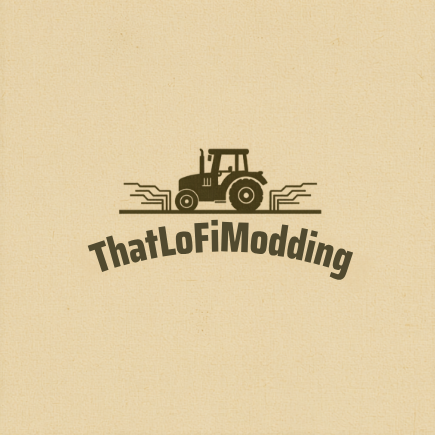
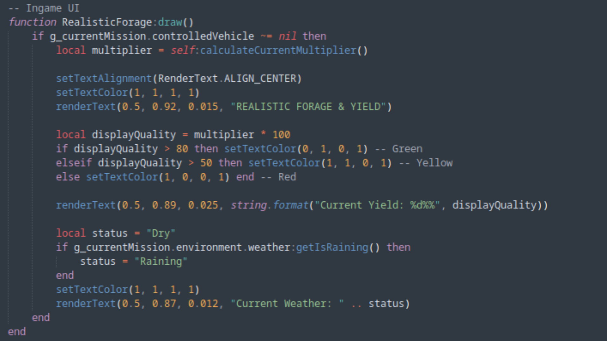
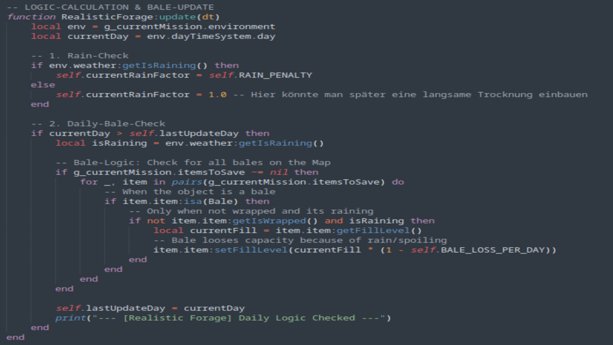

Realistic Forage & Yield
Visualizing the core logic of the mod. These charts demonstrate the complex yield loss and drying calculations based on weather and time variables.

Grass Yield Loss over time

Hay Drying & Density simulation

Straw degradation due to rain

Bale quality loss dynamics
Ever wondered why grass never spoils in Farming Simulator or why rain has no impact on hay quality? "Realistic Forage & Yield" is here to change that!
Realistic Grass & Hay Management:
- Grass Decomposition: Freshly mown grass loses 5% yield per day if left on the field.
- Realistic Hay Drying: Turning grass into hay immediately reduces volume to 50% (simulating density changes).
- Turning Bonus: Each additional tedding pass increases yield by 10%, and each sunny day adds another 5%.
- Rain Impact: Rain resets hay and straw yield back to 50% and restarts the drying process.
- Bale Degradation: Unwrapped bales left in the rain lose volume and quality over time.
Realistic Straw Management:
- Rain Damage: If it rains on swathed straw, yield immediately drops to 50%.
- Drying Logic: Wet straw needs sun or tedders to recover yield (will never reach original 100% quality again).
- Time Factor: Straw loses 5% yield per day even without rain due to weathering.
A look behind the scenes! I am currently working intensively on the Scripting of the Ingame Interface (UI). As you can see in the image, the system calculates quality and weather status in real-time. Final ingame images will be published towards the end of development.

Changelog:
- Language Support: Ukrainian added as an official language for description and UI.
- UI Design: First script module for the ingame overlay completed.
- Optimization: Refined calculation method for the yield factor.
After the great feedback on the UI design, here is an insight into the core of the mod: The Bale Logic. The script now precisely calculates how moisture affects decay. Depending on the weather, bale quality changes over time – a must for every realism fan!

We are approaching the finish line, but Quality Over Speed! The mod will soon enter the testing phase. Accordingly, it is time to translate the mod into several languages.
Currently Supported Languages:
- German
- English
- Ukrainian
- Russian
- Danish
If you want your native language integrated, please send me a message via Discord @thatlofimodding.
Dev Update (May 18, 2026): We have officially hit a major milestone. The core LUA script for the rotting and drying mechanics is 100% written and ready!
However, we are currently facing a temporary hardware bottleneck. A critical PC component passed away, and due to volatile hardware market prices, we are on a short forced break. The project will enter the heavy ingame stress-testing phase the second our hardware hurdle is cleared. Remember: Quality Over Speed! We refuse to release an untested script that could corrupt your savegames.
< BACK TO GALLERY